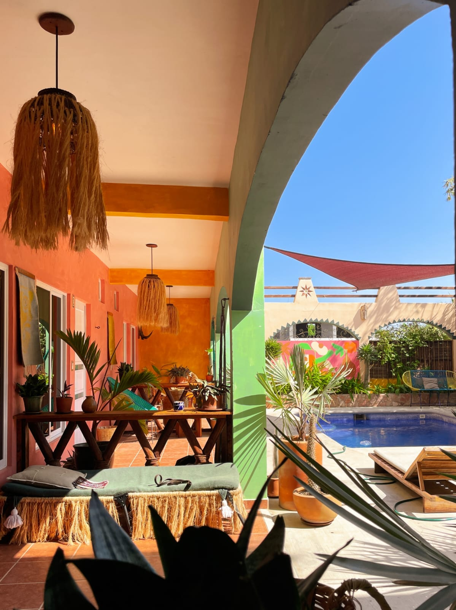
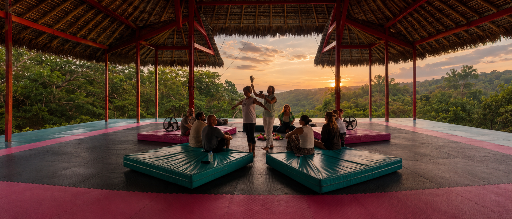
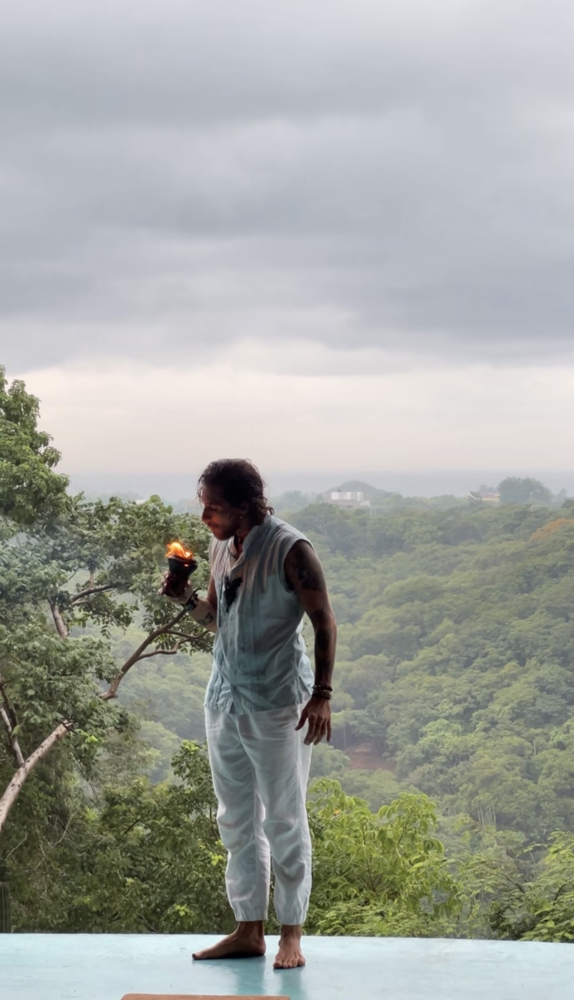
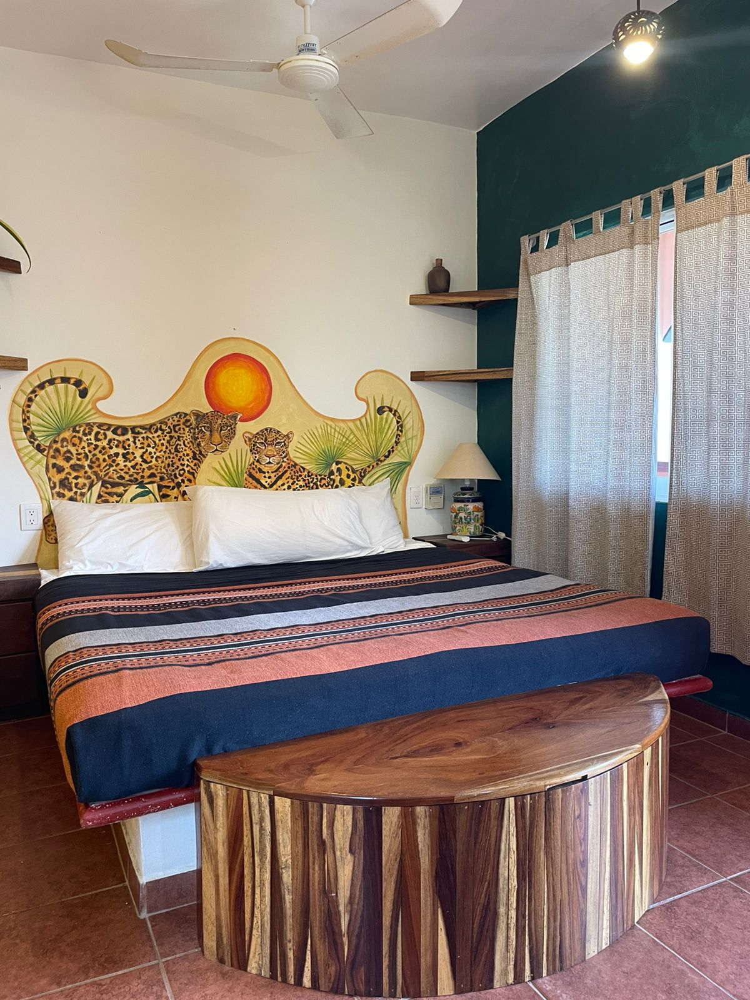
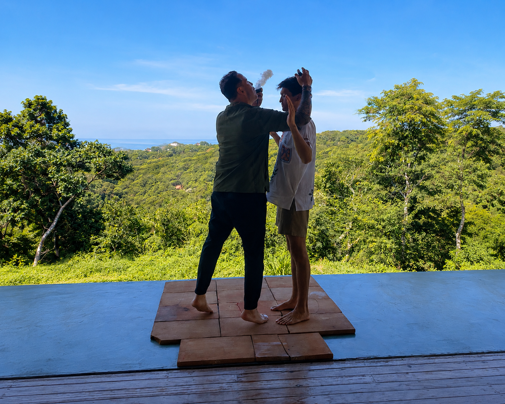
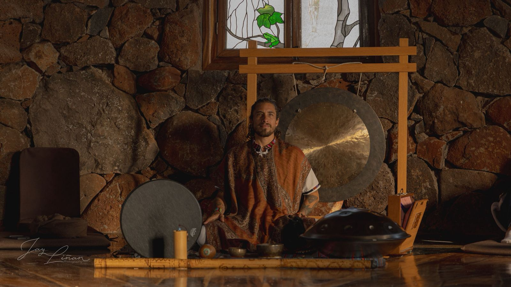
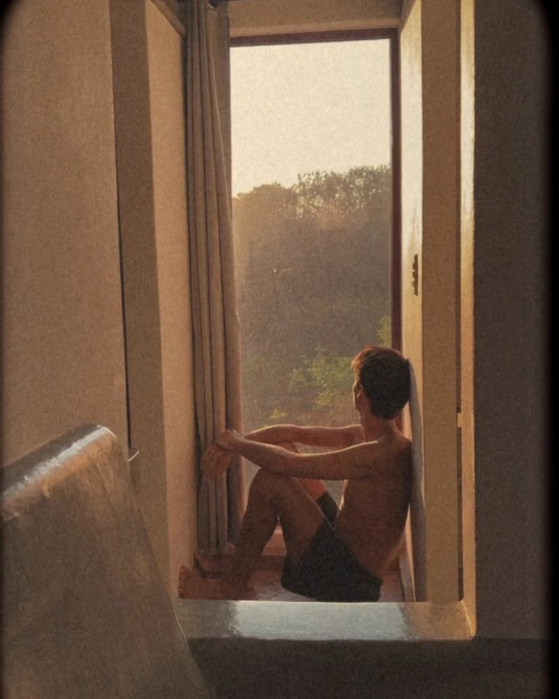
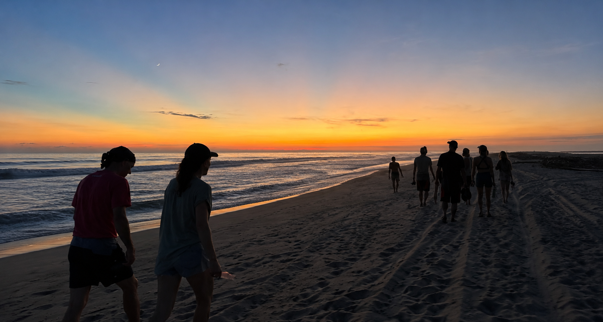

Sacred Journeys · Private Retreat Details
You've had the conversation. Here is everything you need to know — the venue, the medicines, the days, the rooms, and the logistics.
This is not a wellness weekend. It is not a yoga retreat with an optional sound bath. It is a structured, intentional container — seven days in Puerto Escondido, held by a team who has done this work themselves, guided by a shaman with nearly a decade of ceremony across four continents.
The first two days are for arriving. For slowing down enough to remember why you came. The ceremonies come later, once the group has landed, connected, and set intention together. The final days are for integrating — holding what came up, letting the realizations settle, and preparing to carry it home.
Everything in between is designed to support that arc. The meals, the movement, the excursions, the quiet time. None of it is filler. All of it is the container.

Not included: International flights. You are responsible for booking travel to Puerto Escondido (PXM). Everything from arrival onward is covered.
Rated the number one villa in Puerto Escondido for retreats and group stays. Located in La Barra — a quieter corner of the coast, five minutes on foot to a pristine beach, ten minutes by car to La Punta and Zicatela.
Ten spacious rooms each with private bathrooms, AC, ceiling fans, and balconies. A private pool, a shaded rooftop kitchen and dining area with ocean views, hammocks, and art by João Incerti and Enrique Larios throughout. The entire property is yours exclusively for the week. No other guests. Complete privacy.
It was designed for exactly this — for groups who need a space that holds both the depth of inner work and the ease of physical comfort. The energy of the place does something to people before the ceremonies even begin.
"The whole energy of this space is designed for presence — connection to nature, integration, and deep inner work."

Three room tiers. All participants share the same experience, the same ceremonies, the same meals, and the same full container. The room choice is simply about how you want to sleep.

Two days to arrive and connect. Three ceremony days woven through the middle. Two days to integrate before returning home. The days between hold practices, excursions, shared meals, and time that is genuinely yours.


"Si no vives para servir, no sirves para vivir."

"You are your own healer. I'm just here to walk beside you as you remember."

"The right environment can change everything."
Each medicine has been chosen with intention. The combination is specific, potent, and complementary. This is a genuine introduction to sacred medicine, held in a container that is structured, safe, and beginner friendly. The majority of our October 2025 participants had no prior experience. All ceremonies are held by Humberto Alcalá and his team.
Brewed from two Amazonian plants with deep roots in indigenous healing traditions, Ayahuasca works like a mirror held to the interior of your life. It surfaces what has been buried, clarifies what has been obscured, and creates conditions for emotional release and deep insight.
The ceremony is long, often demanding, and facilitated by Humberto within a traditional Shipibo framework, with live music throughout from Aleck and the ceremonial team. What comes up is specific to each person. The container holds whatever arrives.
Kambo is not a psychedelic. It is a powerful physical purge derived from the secretion of the Amazonian tree frog. Intense, brief, and deeply cleansing. It is used before the Ayahuasca ceremony because of what it does to the body — it clears, prepares, and opens.
The experience lasts thirty to forty minutes. Most participants describe feeling completely different on the other side of it. Lighter. More present. Ready. Kambo is optional and held with care and intention.
Satori is unique to Humberto. A proprietary blend drawn from two plants with roots in Mexican and Middle Eastern healing traditions. Taken in capsule form. Gentler on the body than Ayahuasca but equally powerful in what it produces — clarity, emotional release, and a quality of insight that tends to arrive quietly and stay.
Participants often describe Satori as the medicine that makes sense of everything that came before it in the sequence. It is its own teacher, with its own rhythm and energetic signature.
Bufo is brief. Fifteen to twenty minutes. It is not a visionary journey. It is a complete reset of the sense of self, held in the open air, facilitated one person at a time. Many describe it as the most significant experience of their lives. Others describe it as returning home to a place they did not know they had forgotten.
It is not frightening if you are prepared for it. The preparation happens in the days prior. Bufo is the final medicine in the sequence for a reason. It closes what was opened.
Rest is part of the work. The days between ceremony are intentionally spacious. Not every hour is scheduled. All of the below is available. None of it is mandatory.
Excursions are offered as a group where possible. Some days you may prefer to stay at the villa. The pool, hammocks, and rooftop are always available.
The nearest airport is Puerto Escondido International — airport code PXM. Direct flights are available from Mexico City (MEX) and Oaxaca City (OAX). Most international travelers fly into Mexico City first, then connect to Puerto Escondido.
From the airport, a taxi to the Pineapple Mansion costs approximately 300 pesos and takes about 15 minutes. Arrange your own transfer from the airport — everything from arrival at the villa onward is fully covered.
| Arrival airport | PXM — Puerto Escondido |
| Connecting hub | MEX (Mexico City) or OAX (Oaxaca) |
| Airport to villa | ~15 min · ~300 pesos taxi |
| Check-in | November 23, from 3pm |
| Check-out | November 30, by 10am |
Light, comfortable clothing for warm weather. Puerto Escondido in late November sits between 27 and 30 degrees Celsius. The ocean is warm. Bring a light layer for evenings.
Ceremony clothing: loose, comfortable, preferably natural fabrics. White or light colors are traditional for ceremony, though not required. Bring an eye mask and a journal. A full preparation guide is sent to accepted participants before arrival.
| Weather | 27–30°C |
| Ocean | Warm, swimmable · 5 min walk |
| Currency | Mexican Peso (MXN) |
| Language | Spanish · English spoken by team |
| Timezone | CST (UTC-6) |

If you've read this far and something is still moving in you — that is enough. Send Trevor a message. The next step is one conversation away.